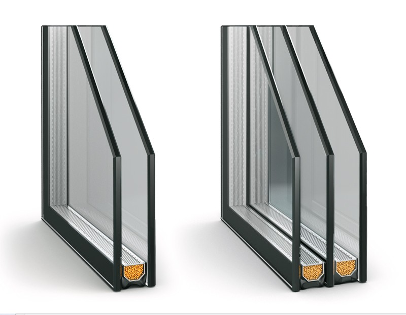
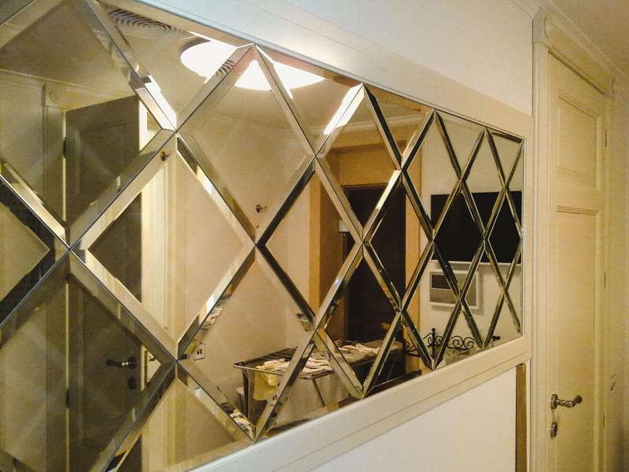

Объявления
Golden glass
Виды услуг:
•Стеклопакеты•

От 1200 сом
•Фацетные стекла и зеркалы•

От 3000 сом
Продажа стекла в розницу и оптом
Стекло Киргизия от 1600 сом
Адрес:
Косымбекова 25/2
Ориентир: Гор.ГАИ
Тел: +996 755 002 002
Golden glass™ ©2022